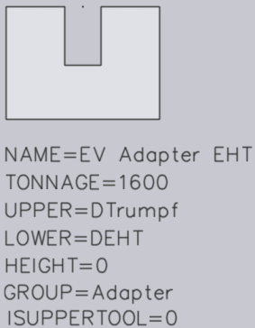
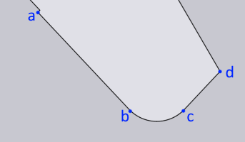
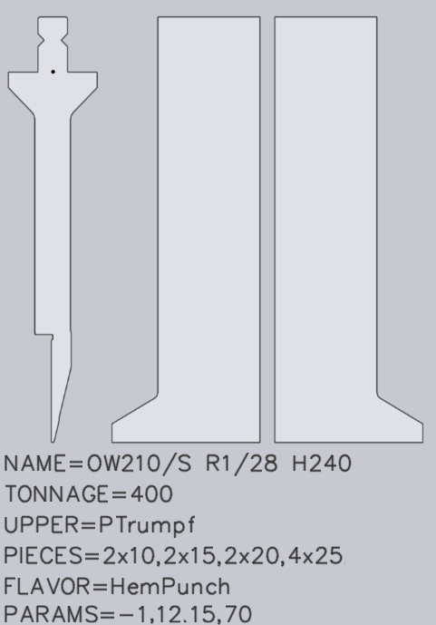
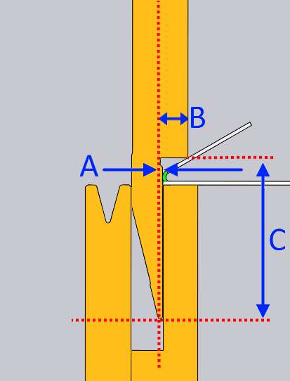
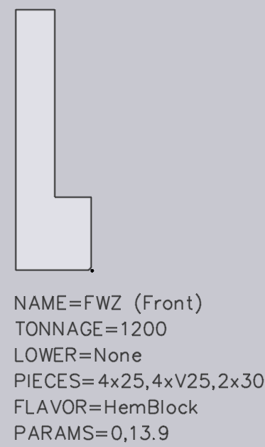
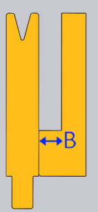
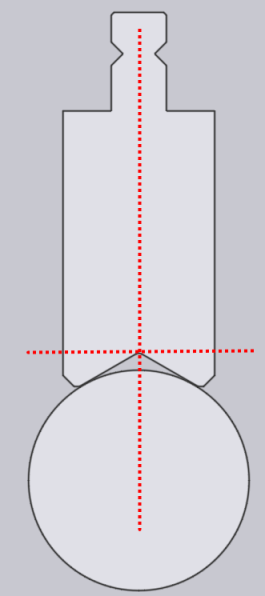
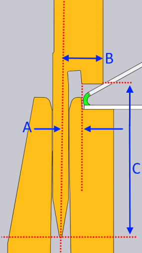
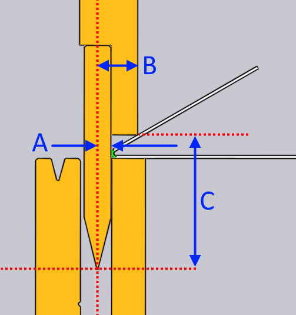

Ohýbací nástroje DXF
TecZone se dodává s širokou škálou katalogů ohýbacích nástrojů (např. Trumpf, Wila, Wilson, Rolleri, Amada atd.). Pokud používáte nástroje z některého z přibližně 40 různých katalogů nástrojů, které TecZone poskytuje, můžete jednoduše nainstalovat katalog a začít nástroje používat. Občas je nutné namodelovat vlastní nástroj nebo nástroj, který není zastoupen v katalogu TecZone.
Formát DXF ohýbacího nástroje je standardním mechanismem, pomocí kterého se to provádí. TecZone nyní umožňuje exportovat ohýbací nástroje do formátu DXF a také importovat ohýbací nástroje z formátu DXF. Soubory DXF používané k reprezentaci ohýbacích nástrojů musí dodržovat určitá pravidla, aby TecZone mohl shromáždit všechny potřebné informace. Velmi častým a rychlým způsobem vytvoření ohýbacího nástroje je použití funkce Exportovat do DXF k vytvoření souboru DXF z existujícího nástroje. Poté lze soubor DXF upravit (buď v programu TecZone, nebo v jakémkoli jiném 2D CAD systému). Nakonec lze upravený soubor DXF vložit zpět do programu TecZone pomocí funkce Importovat z DXF.
Příklad DXF
Zde je příklad ohýbacího nástroje DXF, který byl vytvořen pomocí příkazu Exportovat do DXF:

Nástroj DXF musí obsahovat:
-
Jeden uzavřený tvar (složený z čar, oblouků, polyčar), který definuje boční profil nástroje. Tato profilová čára musí být nejvíce vlevo uzavřená POLYČÁRA v výkresu (viz obrázek výše).
-
BODOVÝ objekt označující referenční bod nástroje. Tento bodový objekt musí ležet někde uvnitř uzavřené profilové polyčáry a označuje bod, od kterého se měří výška nástroje (viz obrázek výše).
-
Pro každý nástrojový díl, který není v čelním pohledu jednoduchým obdélníkem, je vyžadován výkres čelního pohledu. Obvykle se jedná o levé nebo pravé ušní díly, ale mohou to být i zakázkové díly, včetně okenních dílů.
-
Každý výkres čelního pohledu musí být umístěn vpravo od bočního pohledu a musí být s ním vodorovně zarovnán. Každý čelní pohled musí mít přesně stejnou výšku jako boční profilový výkres; jinak nebude brán v úvahu. Obrázek výše ukazuje typický příklad s levým a pravým ušním dílem.
-
Další informace o nástroji jsou uvedeny pomocí textových řetězců (viz poznámky níže).
Metadata v textových objektech
Veškeré textové řetězce ve formátu KEY=value jsou načteny exportérem nástrojů a analyzovány za účelem získání dalších informací o nástroji. Toto jsou klíče, které jsou nyní podporovány:
NÁZEV=OW200/K R3.2/86 CUSTOM-A
Určuje název nástroje. Toto je povinné.
TONÁŽ=800
Určuje maximální zatížení nástroje v kN/m. Toto je povinné, pokud chcete
zabránit zobrazení falešných chyb přetížení nástroje.
HORNÍ=PTrumpf
To je nezbytné pro razníky a určuje typ konektoru (typ montáže tohoto
nástroje na lisovacím trámu). Podporované typy připojení jsou uvedeny níže:
Název |
Význam |
PTrumpf |
Razník Trumpf (konektor Modufix) |
PAmada |
Razník Amada |
PWila |
Razník Wila classic |
PWilaNS |
Razník Wila New-Standard |
PAmerican |
Americký (typ US) razník |
PEHT |
Razník EHT |
PLVDA |
Razník LVD velikosti A |
PLVDB |
Razník LVD velikosti B |
PLVDC |
Razník LVD velikosti C |
PLVDD |
Razník LVD velikosti D |
PGasparini |
Razník Gasparini |
PBayelerR |
Razník Bayeler typu R |
PBayelerS |
Razník Bayeler typu S |
PUrsviken |
Razník Ursviken OEM |
PBayelerEuro |
Razník Bayeler Euro |
PColgar |
Razník Colgar |
PKomatsu |
Razník Komatsu |
DOLNÍ=DTrumpf
To je nezbytné pro matrice a určuje typ konektoru (typ montáže tohoto
nástroje na loži matrice). Podporované typy připojení jsou uvedeny níže:
| Název | Význam |
|---|---|
DTrumpf |
Matrice Trumpf |
DAmada30 |
Matrice Amada, šířka 30 mm |
DAmada60 |
Matrice Amada, šířka 60 mm |
DAmadaF |
Matrice Amada, plochá |
DAmada2V |
Matrice Amada 2-V |
DAmadaQuick |
Rychlovýměnná matrice Amada |
DAmada90 |
Matrice Amada, šířka 90 mm |
DEHT |
Matrice EHT |
DAmada120 |
Matrice Amada, šířka 120 mm |
DWeinbrenner |
Matrice Weinbrenner |
DWila |
Matrice Wila |
DKomatsu |
Matrice Komatsu |
DBeyeler110 |
Matrice Beyeler 110 mm |
DLVD |
Matrice LVD |
DÍLY=2x25,30,45,50,2x100,200,4x500
Tím se určují standardní díly pro tento nástroj (levé a pravé ušní díly
jsou již určeny nakreslením jejich profilů). Seznam je soubor délek dílů oddělených čárkami a volitelně může být před každou délkou uveden množstevní multiplikátor. Výše uvedený seznam tedy definuje, že existují 2 díly o délce 25 mm, 1 díl o délce 30 mm,
4 díly o délce 500 mm atd.
| Pokud chcete množstevní multiplikátor pro speciálně tvarované díly (například ušní díly), stačí přidat textový objekt ve formě 2x uvnitř obrysu daného dílu: |

VWIDTHTYPE=Ostrá
To je nutné u matric, jejichž definice šířky V neodpovídá definici Trumpf (viz
obrázek níže):
| Název | Význam |
|---|---|
Ostrá |
Teoretická ostrost matrice |
Tangenta |
Horní tangenciální bod |

ISUPPERTOOL=0
Určuje, zda se jedná o horní nebo dolní nástroj. Pro horní nástroj by hodnota měla být 1
a pro spodní nástroj by měla být nula. To je nutné u nástrojů, které musí být
importovány s nulovou výškou (viz obrázek níže):

Rozpoznávání tvarů
V ohýbacím nástroji ve formátu DXF není nutné zadávat některé důležité parametry razníku/matrice, jako je výška, poloměr, úhel nebo šířka V. TecZone analyzuje výkres nástroje a automaticky extrahuje tyto parametry. Pro razník TecZone očekává, že v dolním segmentu (bc) najde zakřivený segment, který je lemován přímkami (ab a cd).

Z těchto tří segmentů se automaticky rozpozná úhel a poloměr razníku. U matrice TecZone zkoumá levé rameno, aby extrahoval parametry. Očekává, že najde zakřivený segment ramene (bc) lemovaný vodorovnou horní částí (ab) a nakloněným úhlovým segmentem (cd).

Pokud razník nebo matrice nesplňují tyto požadavky na rozpoznání tvaru, TecZone nebude schopen rozpoznat tvar jako razník nebo matrici.
Další informace:
-
Profil nástroje se může objevit kdekoli ve výkresu – přesné umístění není důležité, protože k určení referenčního bodu nástroje se používá objekt bodového příznaku.
-
Kromě výše uvedených objektů by ve výkresu neměly být žádné další objekty. Zejména by ve výkresu neměl být žádný titulní blok ani žádné uzavřené polyčáry.
-
Výkres by měl být vždy v metrických jednotkách (bez ohledu na aktuální provozní jednotku TecZoneu).
-
Ačkoli příkaz uvádí Importovat z DXF, program TecZone přijme také soubor GEO, pokud splňuje výše uvedené konvence.
Speciální nástroje
Importér nástrojů dokáže rozpoznat určité typy speciálních nástrojů. Tyto je třeba identifikovat pomocí textu ve formě FLAVOR=XYX v souboru DXF.
Falcovací razníky
Pro falcovací razník jsou vyžadována následující další zadání:
-
Text FLAVOR=HemPunch označuje tento nástroj jako přehýbací nástroj.
-
Text PARAMS=-1,12.15,70 poskytuje některé metriky, které jsou nezbytné pro správnou simulaci.


K definování procesu falcování jsou zapotřebí tři parametry. Tyto hodnoty lze vidět jako hodnoty A, B a C na obrázku výše. První (-1 mm v tomto příkladu) definuje, jak daleko za linií ohybu se nachází rovná svislá plocha razníku. V tomto případě, protože rovná svislá plocha je před linií ohybu, je hodnota -1. Druhý parametr (zde 12,15 mm) určuje, jak daleko před linií ohybu se nachází falcovací hrot. Poslední parametr (zde 70 mm) je svislá vzdálenost od hrotu razníku k bodu falcovacího hrotu.
Matrice falcovacího bloku
Falcovací blok je nástavbový díl, který se montuje před nebo za matrici pro falcování. To poskytuje rovinnou plochu, na které se může zapojit falcování, aby bylo možné vytvořit čisté falcování.

Pro falcovací blok jsou vyžadována následující další zadání:
-
Text FLAVOR=HemBlock označuje tento blok jako falcovací blok.
-
Text PARAMS=0,13.9 poskytuje některé metriky, které jsou nezbytné pro správnou simulaci.

K definování falcovacího bloku jsou zapotřebí dva parametry. První parametr definuje polohu falcování, zda má být tento blok použit před matricí nebo za matricí. 0 = přední a 1 = zadní. Výše uvedený příklad ukazuje, že blok lze použít před matricí. Dalším parametrem je délka dráhy falcování, což je pohyb osy I. To je znázorněno jako B na obrázku výše.
Matrice ohybu Z
Pro matrici ohybu Z by měl být v souboru DXF uveden následující text: FLAVOR=ZBendDie
Kromě toho by nástroj měl být nakreslen tak, aby střední plochá část vedla od levého dolního rohu k pravému hornímu rohu. Jinými slovy, orientace by měla být taková, jak je znázorněno na obrázku níže, a ne zrcadlená orientace tohoto:

Razníky ohybu Z
Pro razník ohybu Z by měl být v souboru DXF uveden následující text: FLAVOR=ZBendPunch
Kromě toho by nástroj měl být nakreslen tak, aby střední plochá část vedla od levého dolního rohu k pravému hornímu rohu. Jinými slovy, orientace by měla být taková, jak je znázorněno na obrázku níže, a ne zrcadlená orientace tohoto:

Radiusové razníky
Jedná se o radiusový hřídel, který vyžaduje radiusový držák.

Pro takové razníky jsou vyžadována následující další zadání:
-
Text FLAVOR=RShaft označuje tento prvek jako radiusový hřídel.
-
Text PARAMS=80 je výška nástroje, která se má vypsat v NC programu.
| BODOVÝ objekt je referenční bod nástroje. Nástroj by měl být nakreslen tak, aby referenční bod byl v místě špičky obráceného V držáku. |
-
Nakreslete radiusovou vložku s příslušným držákem tak, jak je namontována ve stroji, jak je znázorněno níže.

-
Odstraňte čáru držáku a uložte rádiusovou vložku dxf. Pouze BODOVÝ objekt na špičce obráceného V držáku a čára vložky, trochu pod BODEM, bude profilem dxf pro tuto vložku.
-
Výška tohoto nástroje se měří od BODOVÉHO objektu. To je znázorněno jako A na obrázku níže.

Falcovací matrice EV-F
Jedná se o nástroje EV-F, které se používají k falcování bez vychýlení. Taková matrice se nazývá I0HemDie.

Pro takové matrice jsou vyžadována následující další zadání:
-
Text FLAVOR=I0HemDie označuje tuto matrici jako I0HemDie.
-
Text PARAMS=8.5,95.5 poskytuje některé metriky, které jsou nezbytné pro správnou simulaci.

Tuto falcovací matrici definují dva parametry. Tyto hodnoty lze vidět jako hodnoty A a B na obrázku výše. První parametr (v tomto příkladu 8,5 mm) definuje, jak daleko je díl během falcování od středové čáry. Druhý parametr (zde 95,5 mm) definuje vertikální vzdálenost od místa, kde leží díl během falcování, ke spodní části matrice.
Falcovací razníky EV-F
Jedná se o razníky EV-F, které se používají k falcování bez vychýlení. Takový razník se nazývá I0HemPunch.

Pro takové razníky jsou vyžadována následující další zadání:
-
Text FLAVOR=I0HemPunch, který označuje toto jako I0HemPunch.
-
Text PARAMS=-8,16,57.5 poskytuje některé metriky, které jsou nezbytné pro správnou simulaci.

K definování procesu falcování jsou zapotřebí tři parametry. Tyto hodnoty lze vidět jako hodnoty A, B a C na obrázku výše. Tyto parametry jsou stejné jako parametry definované v HemPunch.
Matrice Roll-Bend
Matrice Roll-Bend se nazývá křídlová matrice.

Tento nástroj vyžaduje následující další zadání:
-
Text FLAVOR=WingDie, který označuje tento nástroj jako křídlový nástroj.
-
Text PARAMS=10.49,100 poskytuje některé metriky, které jsou nezbytné pro správnou simulaci křídel.

Pohyb křídlových ohýbaných dílů definují dva parametry. První parametr je vodorovná vzdálenost od středové čáry patrice ke středu otáčení jednoho z křídel. Na obrázku výše je to znázorněno jako A. Druhým parametrem je svislá vzdálenost od spodní části matrice ke středu otáčení křídel. Na obrázku výše je to znázorněno jako B. Normálně budou B a výška stejné.
Samostatné falcovací matrice
Jedná se o V-matrice, které mají také samostatnou falcovací tabulku, jak je vidět na obrázku níže. Pro tuto matrici by mělo být v souboru DXF následující textové zadání: FLAVOR=SelfHemDie

Kromě toho je vyžadováno zadání PARAMS, které má dvě hodnoty. Tyto dva parametry jsou stejné jako parametry I0HemDie.

Tyto hodnoty lze vidět jako hodnoty A a B na obrázku výše. První parametr definuje, jak daleko je díl během falcování od středové čáry. Druhý parametr definuje vertikální vzdálenost od místa, kde leží díl během falcování, ke spodní části matrice.
Dvojité V-matrice
Matrice, které mají více šířek V a které vyžadují IAxis k použití jiného V, se označují jako dvojité V-matrice. Je třeba dodržovat několik pravidel:
-
Vytvořte soubory dxf pro matrice s nastavením FLAVOR=DoubleV, jeden pro každou šířku V
-
Nastavte stejné ORDERNO pro obě matrice (může to být jakýkoli neprázdný řetězec)
-
Nastavte hodnotu YSHIFT na správnou hodnotu IAxis, kterou chcete použít
-
Na spodní straně matrice nakreslete bodový příznak, vycentrovaný pod V, aby bylo zřejmé, kde se nachází geometrie tváření
Například matrice s šířkami V 12 a 6 musí být vytvořena jako dva soubory DXF, jak je znázorněno na obrázku níže:

Pružinové falcovací matrice (matrice pro lícované falcování)
U pružinové falcovací matrice by mělo být v souboru DXF textové zadání podobné tomuto: FLAVOR=SpringHem

Kromě toho je vyžadováno následující další zadání:
-
Text PARAMS=-2,30,10 poskytuje některé metriky, které jsou nezbytné pro správnou simulaci.

Tato matrice je dvoudílná a její horní část se pohybuje směrem dolů, aby přitiskla falcování. Existují tři parametry, které definují výsek zploštění přitisknutí. Prvním parametrem je vzdálenost od středové čáry matrice pro daný díl během falcování. Hodnota +ve znamená, že se nachází před středovou čárou, a -ve hodnota znamená, že se nachází za středovou čárou. Na obrázku výše je to znázorněno jako A. Druhým parametrem je poloha výseku přitisknutí od základny matrice pro díl během falcování. Na obrázku výše je to znázorněno jako B. Třetím parametrem je pružinová mezera, což je výška výseku. Na obrázku výše je to znázorněno jako C.
Upnutí razníků
Importér nástrojů může importovat upnutí razníků. Aby program TecZone správně rozpoznal, že výkres představuje upnutí razníku, měl by soubor obsahovat následující textové objekty:
-
Text jako UPPER=PTrumpf označuje typ horní montáže (obvykle se jedná o PTrumpf, pokud má být adaptér namontován na stroj Trumpf).
-
Text jako LOWER=PEHT označující spodní typ montáže (jedná se o typ razníku, který lze namontovat na adaptér).
-
Text jako HEIGHT=64, který mapuje efektivní pracovní výšku adaptéru. To je nutné, protože TecZone nemůže automaticky odvodit výšku adaptéru.
Zde je obrázek upnutí razníku, které lze importovat z DXF:

Držáky nožů
Importér nástrojů může importovat držáky nožů. Některé držáky nožů (například ty podobné OW209/S) jsou také falcovací razníky používané k přitisknutí falcování. Pro takové držáky nožů jsou vyžadována některá doplňková data.

Povinné parametry HORNÍ, DOLNÍ, VÝŠKA jsou vysvětleny v části výše o upnutí razníku a mají stejný význam. Kromě toho, aby TecZone mohl používat držák jako přehýbací nástroj, jsou vyžadována následující další zadání:
-
Text SPLFLAVOR=HemPunch označuje adaptér jako přehýbací nástroj.
-
Text PARAMS=-6,18,60 poskytuje některé metriky, které jsou nezbytné pro správnou simulaci procesu falcování.

K definování procesu falcování jsou zapotřebí tři parametry. Tyto hodnoty lze vidět jako hodnoty A, B a C na obrázku výše. První (-6 mm v tomto příkladu) definuje, jak daleko za linií ohybu se nachází rovná svislá plocha razníku. V tomto případě, protože rovná svislá plocha je před linií ohybu, je hodnota -6. Druhý parametr (zde 18 mm) určuje, jak daleko před linií ohybu se nachází falcovací hrot. Poslední parametr (zde 60 mm) je svislá vzdálenost od hrotu razníku k bodu falcovacího hrotu.
Radiusové držáky
Toto je držák pro nástroje s radiusovým hřídelem.

Jsou vyžadována následující další zadání:
-
Text FLAVOR=RHolder označuje adaptér jako držák radiusového hřídele.
-
Text PARAMS=100 je výška nástroje, která se má vypsat v NC programu.
-
Výška tohoto nástroje se měří od počátku k obrácenému V držáku. To je znázorněno jako A na obrázku níže.

Dvojité V-držáky
Jedná se o uchycení matrice na 2 matrice.

Jsou vyžadována následující další zadání:
-
Text FLAVOR=DVHolder označuje adaptér jako DVHolder.
-
Text PARAMS=0,36.2 poskytuje metriky pro přesunutí matrice do jiné drážky v držáku.

K definování tohoto nástroje jsou zapotřebí dva parametry. První (v tomto příkladu 0 mm) definuje, jak daleko je první drážka vzhledem k referenčnímu bodu držáku. V tomto případě, protože první drážka je zarovnána s referenčním bodem, je hodnota 0. Druhý parametr (zde 36,2 mm), který je na obrázku výše označen jako A, definuje vzdálenost druhé drážky od referenčního bodu držáku.